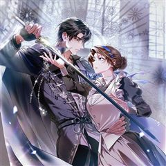
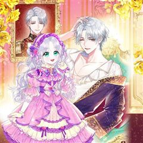
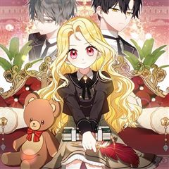
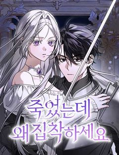
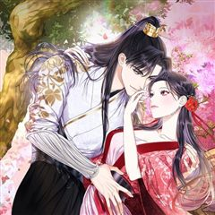
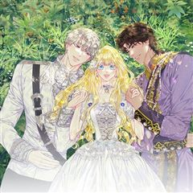
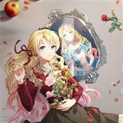
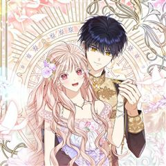

세이렌: 악당과 계약 가족이 되었다 같은 웹툰 추천

세이렌: 악당과 계약 가족이 되었다 · 생얌 / 포야 / 설이수
세이렌: 악당과 계약 가족이 되었다 재밌게 봤다면 이 웹툰들도 좋아할 거예요. 같은 장르이면서 회귀, 로판 같은 요소가 겹치는 작품을, 겹치는 요소가 많은 순서로 20개 골랐어요.
2026-10-05 기준 · 네이버웹툰·카카오웹툰·레진코믹스 · 성인 작품 제외
내 취향으로 직접 골라 추천받기 →-
1
 카카오웹툰
카카오웹툰이번 생은 가주가 되겠습니다
“…한번 해 보자. 내가 가주가 되는 거야.” 제국에서 제일가는 가문, 롬바르디의 사생아로 환생한 피렌티아. 게다가 이 가문은 막대한 부는 물론 외교와 문화까지 통달한 말그대로 제국의 역사 자체! 금수저 오브 금수저 인생 당첨! 앞으로는 탄탄대로일…
회귀로판로맨스카카오웹툰에서 보기 → · 이번 생은 가주가 되겠습니다 같은 웹툰 → -
2
 카카오웹툰
카카오웹툰이 결혼은 어차피 망하게 되어 있다
여섯 살, 카셀의 삶은 이네스에게 선택받은 이후 송두리째 바뀌었다. '평생'이 얼마 만큼인지도 모르는 어린아이에게 '평생'을 약속하게 한 맹랑한 동갑내기 여자아이. 카셀은 곧 빼앗길 자유를 최대한 누리겠다는 듯 해군에 입대해 방탕한 생활을 일삼는다.…
회귀로판로맨스카카오웹툰에서 보기 → · 이 결혼은 어차피 망하게 되어 있다 같은 웹툰 → -
3
 네이버웹툰
네이버웹툰언니, 이번 생엔 내가 왕비야
약혼자, 언니, 부모. 모든 것으로부터 버려진 그 날, 아리아드네는 15년 전으로 회귀한다. “젠장! 나는 지금 너에게 구애하는 거라고!” 태도가 완전히 달라진 전생의 약혼자부터, “울지 마, 아리아드네. 너는 네가 얼마나 예쁜지 모르지?” 그녀에게…
회귀로판로맨스네이버웹툰에서 보기 → · 언니, 이번 생엔 내가 왕비야 같은 웹툰 → -
4
 카카오웹툰
카카오웹툰대공가에 입양된 성녀님
“그만하고 싶어. 더는… 이용당하면서 살고 싶지 않아.” 성녀의 힘을 가졌음에도 내정된 가짜 성녀를 위해 평생을 감금당한 채 살아야 했다. 괴로움을 견디지 못해 죽고 나면 되돌아왔고, 강제로 반복되는 회귀 끝에 다른 방법을 택한 다이나는 우연히 대공…
회귀로판로맨스카카오웹툰에서 보기 → · 대공가에 입양된 성녀님 같은 웹툰 → -
5
 카카오웹툰
카카오웹툰검을 든 꽃
피로 물든 제국. 그날 나는 마검에 잠식된 채 가장 사랑하던 사람들을 내 손으로 베었다. 마검에 물든 지 15년째, 인간이 만든 열 개의 검 기오사를 모두 소유한 나는 신검에게 소원을 빌었다. "아무도 죽이지 않았던 과거로 나를 돌려보내줘." 시간은…
회귀로판로맨스카카오웹툰에서 보기 → -
6
 카카오웹툰
카카오웹툰가짜 아내에게 왜 집착하세요?
“내 아내로 인정받을 망상 따위 꿈에도 하지 않는 게 좋을 거다. 내가 발라지트의 딸에게서 후사를 볼 일은 영영 없을 테니.” 나디아는 하마터면 나도 같은 생각이라고 맞장구칠 뻔했다. 감사합니다, 후작놈아. 자기 입으로 한 말은 꼭 지키세요. ***…
회귀로판로맨스카카오웹툰에서 보기 → -
7
 카카오웹툰
카카오웹툰주치의는 할 일 다 하고 사표 씁니다
영지 최고의 실력을 자랑하는 의사, 리체 에스텔. 반란군을 치료했다는 이유로 억울하게 투옥되지만, 그곳에서 한 할머니를 치료해준 보답으로 다시 한 번 생을 살 수 있게 되었다! 과거 반란의 원인은 소공자 에르안의 급사. 그렇다면 이번 생의 목표는 '…
회귀로판로맨스카카오웹툰에서 보기 → -
8카카오웹툰
이상한데 효과적인 악녀 생활
제국의 최고 명문 프렐라이 공작가의 막내 손녀이자 천재 마법 공학 박사인 키아나 프렐라이. 콩가루 집안에서 가출한 후 촌구석 상아탑에 처박혀 논문 찍는 기계처럼 연구에 매진한 지 7년. 갑자기 들이닥친 군사들에 의해 제국으로 끌려갔다. 아니, 할아버…
회귀로판로맨스카카오웹툰에서 보기 → -
9카카오웹툰
어떤 계모님의 메르헨
철혈의 미망인, 거미 과부, 남자 사냥꾼, 노이반슈타인 성의 마녀, 귀부인들의 수치……. 모두 슈리 폰 노이반슈타인 후작 부인을 가리키는 말이다. 세상에 욕 먹어 가며 동생뻘인 피 한 방울 섞이지 않은 자식들을 키워냈다. 그리고 마침내 첫째 제레미의…
회귀로판로맨스카카오웹툰에서 보기 → -
10카카오웹툰
마왕의 아이로 살아남는 법
세상이 멸망했다. 또다시. 천 번에 가까운 회귀를 거듭하며 세계 멸망을 막아 보고자 아무리 용을 써도, 나는 결코 결말을 바꿀 수 없었다. 이제는 지친다. 회귀도 지긋지긋하다. 이번에는 몇 살로 회귀할까. 회귀 따위, 다시는 하고 싶지 않은데. “으…
회귀로판로맨스카카오웹툰에서 보기 → -
11

카카오웹툰제국의 시녀
'흔해 빠진 외모, 자작가의 사생아.' 내세울 만한 배경은 없지만 비상한 머리 덕에 시녀의 신분으로 권세를 손에 쥔 레오나. 하지만 영원불멸할 줄 알았던 제국이 적의 침공에 무너진 순간, 그녀 역시 적병의 칼에 죽음을 맞이한다. 욕심 때문에 남을 해…
회귀로판로맨스카카오웹툰에서 보기 → -
12
 카카오웹툰
카카오웹툰몰락 세가의 시한부 영약
7년 만에 깨어난 단목세가의 장손 단목련. 자신의 죽음 이후까지 보고 돌아온 그녀 앞에 갑자기 이상한 문구가 보이기 시작한다. [영기를 50 이하로 유지하세요. 이 상태로 두 달 이상 지속될 시 사망에 이르게 됩니다.] 내공을 쌓을 수 없는 그녀는…
회귀로판로맨스카카오웹툰에서 보기 → -
13

카카오웹툰최강자 오빠가 기억을 잃었다
유일한 가족이었던 오빠가 기억을 잃었다. "나에게 동생이 있다고? 장난해?" 신전에서 나를 데려온 후로 어화둥둥 아껴만 주던 동생 바보였는데... "내 앞가림도 못하겠는데 이게 무슨..." 기억도 없는 오빠에게 짐이 되기 싫었던 나는 가문을 떠났고,…
회귀로판로맨스카카오웹툰에서 보기 → -
14

카카오웹툰이물질은 나였다
성녀 후보였던 나는, 계략에 빠져 유일한 후원자였던 공작가를 몰락시키고 라이벌이었던 디아나를 독살하려 했다는 누명을 쓴 채 비참하게 죽게 된다. '무슨 삼류 소설 속 이물질도 아니고…' 라고 생각한 순간 깨닫는다. 진짜로 소설 속 이물질에 빙의했음을…
회귀로판로맨스카카오웹툰에서 보기 → -
15

네이버웹툰죽었는데 왜 집착하세요
결혼식 당일, 내 연인과 친구가 바람이 났다. 두 사람의 배신에 나는 죽었고, 다시 눈을 떴을 때는 과거로 회귀했다. 이건 신이 내린 축복이니 정당하게 복수할 기회가 주어졌다고 생각했다. 하지만……이 회귀가 끝나지 않는다. 복수에 실패하면 그들의 배…
회귀로판로맨스네이버웹툰에서 보기 → -
16

카카오웹툰검은 달이 뜨면
평생을 가문과 가주에게 충성했지만 돌아온 것은 첩자라는 누명과 가족의 죽음 뿐이었다. 그리고 그 끝에서, 세화는 기적을 경험한다. “그래서 너는 이 제안을 어찌 생각하느냐.” 다시 눈을 떴을 때, 그녀는 흠모하던 이와 정혼하던 바로 그 순간으로 돌아…
회귀로판로맨스카카오웹툰에서 보기 → -
17

카카오웹툰모두의 황녀님
8살 생일을 기점으로 10년간 기나긴 꿈을 꾸었다. 그 꿈의 마지막은 친엄마에 의한 죽음이었는데... 꿈과 똑같은 일이 반복되자 살아남기 위해 황후를 만나러 도망쳐 나왔다. 하지만 나의 친엄마인 후궁을 끔찍하게 싫어하는 이복 오빠이자, 황태자인 루드…
회귀로판로맨스카카오웹툰에서 보기 → -
18

카카오웹툰나는 황제의 잃어버린 딸
전생에서 경험한 문물을 구현해 제국을 번성하게 하는 능력을 지닌 '환생자'. 로시테는 환생자의 고유 능력인 구현력을 쓸 수 있다는 이유로 환생자 카리나에게 괴롭힘을 당한다. 심지어 이덴티노 공작을 살해하려 했다는 누명까지 쓰고 처형을 당하게 되는데.…
회귀로판로맨스카카오웹툰에서 보기 → -
19

카카오웹툰악당들의 최애는 나
부모님을 잃고 이복동생과 둘만 남게 된 루미나. 가문의 재산을 노리는 친척들에게 이용만 당하다가 끔찍한 죽음을 맞이하게 되는데……. 눈을 떠보니 부모님이 죽은 열두 살 때로 돌아왔다! ‘친척들 잘 되는 꼴? 못 보지.’ 친척들에 대한 복수를 다짐하며…
회귀로판로맨스카카오웹툰에서 보기 → -
20카카오웹툰
죽여도 될까요, 폐하
황위를 노리는 황자 때문에 죽고, 자그마치 회귀 4회차째. 또 죽을 순 없다. 황자를……. 꼬셔보자! *** “다시 말해 봐. 그때 했던 얘기.” 빨간 피를 뒤집어쓴 카스티안이 에아렌델을 바라보며 말했다. “나를 좋아한다고. 진심이라고. 네가 그랬잖…
회귀로판로맨스카카오웹툰에서 보기 →